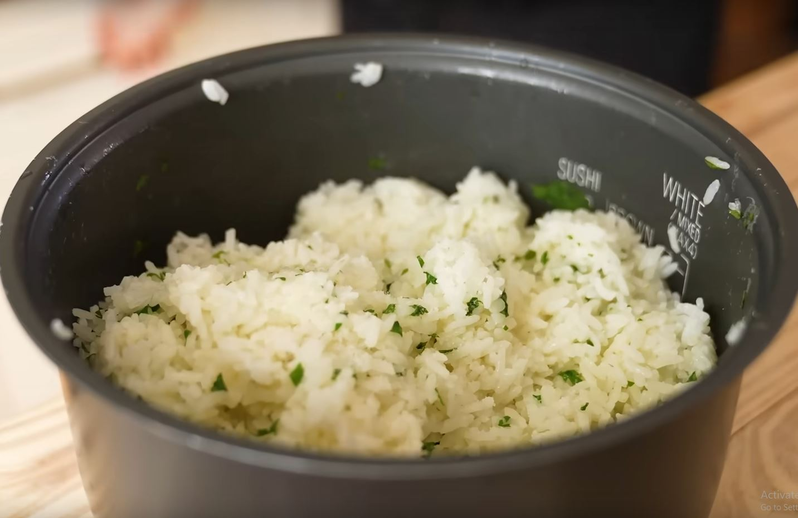

My Cilantro Rice Recipe

The Best Way to Prepare Rice
Rice can go with almost everything and this recipe
mixes perfectly with the other components.
You could
use white or brown rice but this recipe calls for white rice
because it hits the craving.
You will need a rice cooker
for this recipe.
Ingredients
- 3 cups White rice
- 3 cups Water
- 2 1/2 tbsp Finely chopped cilantro
- 2 tbsp Unsalted butter
- 1 Lime
Steps
- Pour 3 cups white rice into the rice pot.
- Wash the rice.
- Add 3 cups water to the rice and turn on the rice cooker.
- Finely chop the cilantro.
- When the rice is done, add cilantro, butter, zest from the
lime, and the lime's juice.
- Mix and you're done.
Return to the top.
Return to the main page.